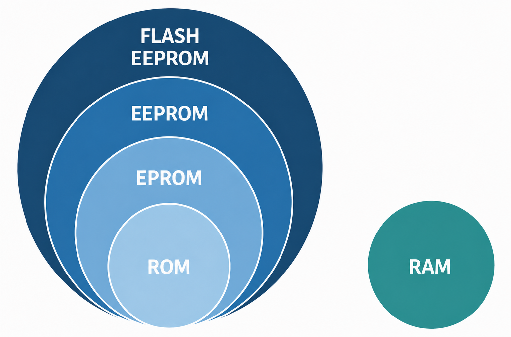
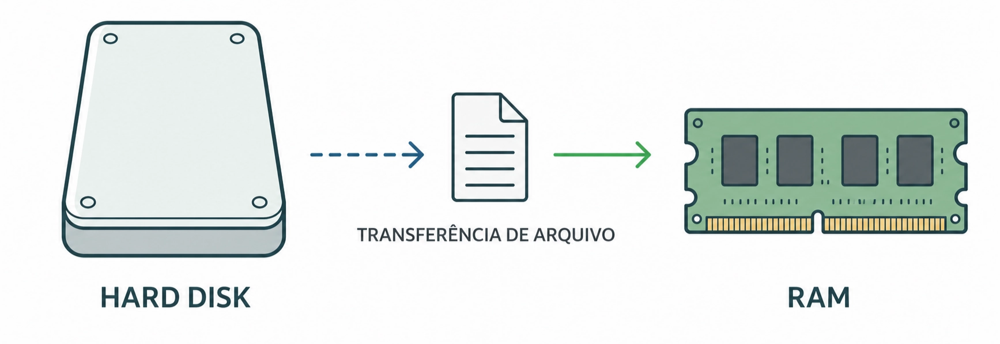
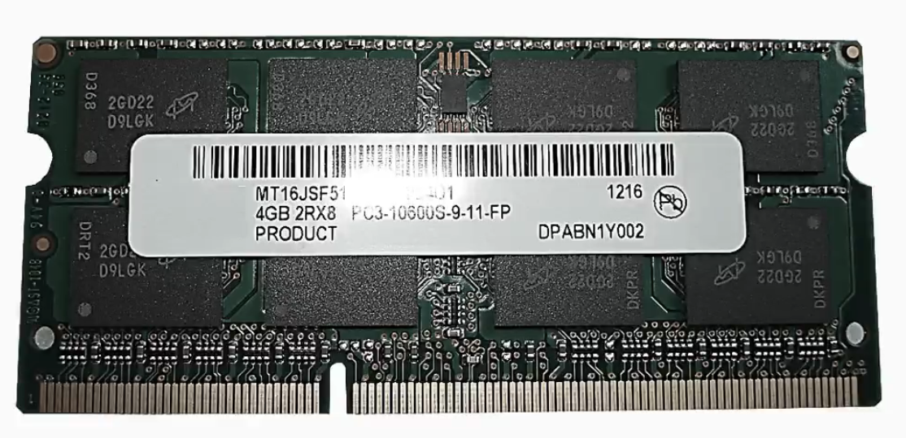
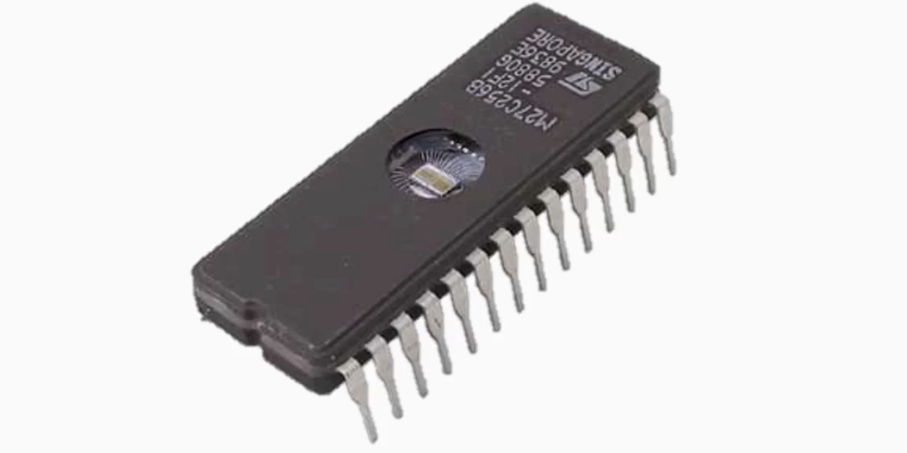
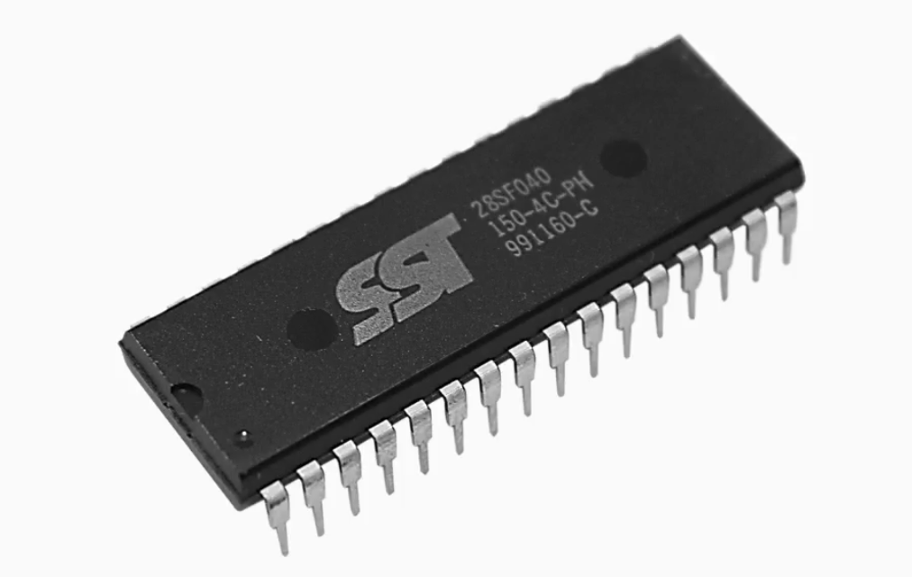
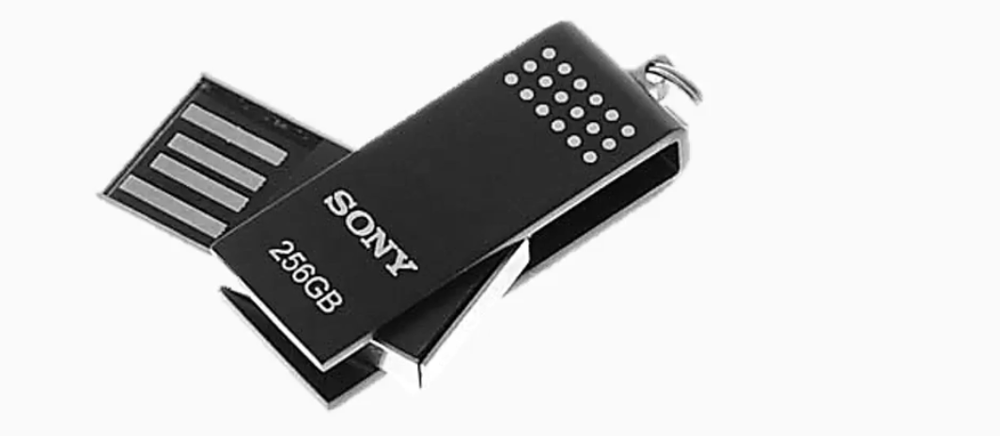

Texto Explicativo da Aula
Por que Entender Tipos de Memória?
Para compreender plenamente o funcionamento da CPU de um CLP, é necessário primeiro dominar os conceitos fundamentais sobre os tipos de memória utilizados em sistemas computacionais e eletrônicos em geral. A CPU do CLP, assim como qualquer processador moderno, utiliza diferentes tipos de memória para armazenar e acessar dados de formas distintas, cada uma com características específicas de velocidade, volatilidade e capacidade de escrita. Conhecer essas diferenças permite ao técnico entender por que determinados dados persistem após uma falta de energia e outros são perdidos, além de embasar decisões importantes durante a instalação, programação e manutenção de CLPs.

RAM — Memória de Acesso Aleatório (Random Access Memory)
A RAM (Random Access Memory — Memória de Acesso Aleatório) é um dos tipos de memória mais amplamente utilizados em computadores, controladores e dispositivos eletrônicos. Para compreender a origem e o significado de seu nome, é útil compará-la com formas mais antigas de armazenamento de dados.
Em mídias de armazenamento sequencial, como fitas de áudio, fitas magnéticas de dados ou mesmo CDs e DVDs lidos de forma linear, o acesso à informação depende da posição física em que ela está gravada no suporte. Isso significa que, para acessar um dado localizado no meio ou no final da mídia, é necessário percorrer sequencialmente todos os dados anteriores, resultando em tempos de acesso variáveis e muitas vezes longos.
A RAM rompe com essa limitação ao permitir que qualquer posição de memória seja acessada diretamente, em tempo praticamente igual, independentemente de onde o dado está armazenado. Não é necessário percorrer posições intermediárias para chegar à informação desejada — daí o termo "acesso aleatório". Essa característica confere à RAM uma velocidade de acesso muito superior à de mídias sequenciais, tornando-a ideal para o processamento ativo de dados.
Exemplo Cotidiano: A RAM no Computador
Um exemplo didático do funcionamento da RAM é o processo de edição de documentos em um computador. Quando um arquivo — como um documento de texto — está armazenado no disco rígido (hard disk), ele se encontra em uma memória de armazenamento permanente, mas de acesso mais lento para o processador. Ao abrir o arquivo, o sistema operacional o transfere do disco rígido para a RAM, onde o processador pode acessá-lo e modificá-lo com muito maior velocidade. Durante toda a edição, o arquivo reside na RAM. Ao salvar, as alterações são gravadas de volta no disco rígido, em memória permanente.


Característica Crítica: Volatilidade da RAM
A principal limitação da RAM é sua natureza volátil: ela depende de alimentação elétrica contínua para manter os dados armazenados. Caso a energia seja interrompida inesperadamente — como em uma queda de luz durante a edição de um documento não salvo —, todos os dados presentes na RAM são perdidos imediatamente, pois não há mecanismo interno para retê-los sem energia.
Resumindo as características da RAM:
ROM — Memória Somente de Leitura (Read Only Memory)
A ROM (Read Only Memory — Memória Somente de Leitura) representa o oposto da RAM em termos de volatilidade. Trata-se de uma memória não volátil, ou seja, ela retém seus dados mesmo na ausência de alimentação elétrica. Os dados gravados na ROM permanecem armazenados de forma estável e permanente, sempre disponíveis na mesma posição de memória, independentemente de interrupções no fornecimento de energia.
A característica que define a ROM é, como o próprio nome indica, a impossibilidade de modificar seu conteúdo durante o uso normal. Os dados são gravados na ROM durante o processo de fabricação ou em uma etapa específica de programação, e a partir daí apenas podem ser lidos. Isso a torna ideal para armazenar informações fixas e essenciais ao funcionamento de um sistema, como firmware de dispositivos, tabelas de configuração permanente e dados de inicialização.
EEPROM — Memória Somente de Leitura Apagável e Programável por UV (Erasable Programmable Read Only Memory)
A EEPROM (Erasable Programmable Read Only Memory — Memória Programável e Apagável) surgiu como uma evolução da ROM, incorporando a capacidade de apagar e regravar seu conteúdo, mantendo a característica de não volatilidade.
Na EEPROM clássica, o processo de apagamento é realizado por meio de exposição à luz ultravioleta (UV). O chip de memória possui uma janela de quartzo transparente que permite a incidência da luz UV diretamente sobre o circuito interno. Após alguns minutos de exposição, o conteúdo é apagado e a memória pode ser reprogramada com novos dados.

Embora represente um avanço significativo em relação à ROM convencional, o processo de apagamento por UV é trabalhoso e demorado, exigindo a remoção física do chip do circuito, a exposição controlada à luz UV e a reinserção do componente para reprogramação. Essa limitação impulsionou o desenvolvimento de tecnologias mais práticas.
EEPROM Elétrica — Memória Apagável Eletricamente (Electrically Erasable Programmable Read Only Memory)
A EEPROM elétrica (Electrically Erasable Programmable Read Only Memory) representa um avanço importante em relação à EEPROM por UV, pois permite que o apagamento e a reprogramação sejam realizados eletricamente, sem necessidade de remoção do chip ou exposição a luz UV. Isso torna o processo muito mais rápido, prático e compatível com sistemas que precisam atualizar seus dados periodicamente sem intervenção física.
Como a EEPROM, a EEPROM elétrica é uma memória não volátil: os dados são retidos mesmo sem alimentação elétrica. No entanto, essa tecnologia apresenta uma limitação importante: o número de ciclos de apagamento e reprogramação é finito, tipicamente na ordem de dezenas a centenas de milhares de ciclos. Após atingir esse limite, a célula de memória pode deteriorar-se e tornar-se não confiável. Esse aspecto deve ser levado em consideração em aplicações onde a memória é atualizada com alta frequência.

Flash EEPROM — Evolução da Memória Não Volátil Reescrevível
A Flash EEPROM (ou simplesmente memória Flash) é uma evolução direta da EEPROM elétrica, desenvolvida para superar suas principais limitações. As melhorias introduzidas pela tecnologia Flash incluem:
- Maior velocidade de acesso e gravação: a memória Flash opera significativamente mais rápido que a EEPROM convencional, tanto na leitura quanto na escrita de dados.
- Maior capacidade de armazenamento: permite armazenar volumes maiores de dados em um único chip, com menor custo por bit armazenado.
- Maior durabilidade: suporta um número muito maior de ciclos de apagamento e reprogramação em comparação com a EEPROM clássica, além de reter os dados por períodos mais longos sem degradação.
- Apagamento em blocos: ao contrário da EEPROM elétrica, que pode apagar byte a byte, a Flash apaga dados em blocos inteiros, o que contribui para sua maior velocidade operacional.
A memória Flash é amplamente utilizada em cartões de memória, pendrives, SSDs (Solid State Drives) e nos cartões de memória dos CLPs modernos, como os cartões SIMATIC utilizados nas CPUs Siemens S7.

Comparativo Geral dos Tipos de Memória
Exemplo Prático Aplicado
Cenário: Análise dos Tipos de Memória em uma CPU de CLP
Um técnico de automação está realizando o comissionamento de um CLP Siemens S7-300 e precisa explicar ao operador da planta o que acontece com o programa de controle em diferentes situações. O exemplo a seguir demonstra como os tipos de memória se manifestam na prática:
Passo 1 - Identificação das memórias na CPU
O técnico explica que a CPU do CLP utiliza, simultaneamente, diferentes tipos de memória:
A RAM interna da CPU é utilizada durante a execução do programa, armazenando os valores atuais de variáveis, temporizadores, contadores e o estado das entradas e saídas.
A memória de carga (load memory), implementada por meio de um cartão Flash EEPROM (cartão SIMATIC), armazena o programa completo de forma não volátil.
A memória de trabalho (work memory), baseada em RAM, contém apenas a parte do programa ativamente executada pela CPU.
Passo 2 - Simulação de falta de energia
O operador pergunta: "O que acontece com o programa se faltar energia?" O técnico explica:
Os dados na RAM (como valores de contadores não configurados como remanentes) são perdidos, pois a RAM é volátil.
O programa em si (armazenado no cartão Flash EEPROM) não é perdido, pois a Flash é não volátil.
Ao retornar a energia, a CPU recarrega o programa da Flash para a RAM de trabalho automaticamente.
Passo 3 - Simulação de necessidade de atualização do programa
O engenheiro precisa atualizar o programa. O técnico realiza o download via software STEP 7, e o novo programa é gravado na memória Flash do cartão SIMATIC. Como a Flash EEPROM é reescrevível eletricamente, o processo é rápido e não requer nenhuma intervenção física no hardware.
Passo 4 - Explicação sobre os limites de reescrita
O técnico alerta que, embora a memória Flash suporte muitos ciclos de gravação, em ambientes com atualizações muito frequentes de programa é importante monitorar o histórico do cartão de memória e substituí-lo preventivamente quando necessário.
Passo 5 - Conclusão didática
O técnico resume: "A RAM garante velocidade durante a execução; a Flash garante que o programa não seja perdido. Juntas, essas memórias tornam o CLP confiável tanto em operação contínua quanto após interrupções de energia."
Questões de Múltipla Escolha
-
O nome "Memória de Acesso Aleatório" (RAM) se refere ao fato de que:
A) Os dados são gravados em posições aleatórias e não podem ser organizados
B) Qualquer posição de memória pode ser acessada diretamente em tempo praticamente igual, sem percorrer posições intermediárias
C) O acesso aos dados ocorre em ordem aleatória definida pelo processador, sem controle do usuário
D) A memória é alocada aleatoriamente pelo sistema operacional a cada inicialização
-
Qual é a principal desvantagem da RAM em relação a outros tipos de memória?
A) Sua velocidade de acesso é muito inferior à de discos rígidos e mídias ópticas
B) Não permite a leitura e escrita simultânea de dados pelo processador
C) É uma memória volátil, perdendo todos os dados armazenados quando a alimentação elétrica é interrompida
D) Só pode armazenar dados em formato sequencial, dificultando o acesso rápido
-
Em um computador, ao abrir um arquivo de texto armazenado no disco rígido para edição, o arquivo é transferido para a RAM. Isso ocorre porque:
A) O disco rígido não permite leitura direta pelo processador; apenas a RAM pode ser lida
B) A RAM oferece velocidade de acesso muito superior à do disco rígido, permitindo edição eficiente
C) O disco rígido apaga automaticamente o arquivo ao ser aberto, exigindo cópia para a RAM
D) A RAM possui maior capacidade de armazenamento que o disco rígido em computadores modernos
-
Qual das alternativas descreve corretamente a ROM (Read Only Memory)?
A) Memória volátil de alta velocidade utilizada para processamento ativo de dados
B) Memória não volátil cujo conteúdo pode ser lido normalmente, mas não modificado durante o uso
C) Memória reescrevível eletricamente, utilizada para armazenar programas atualizáveis
D) Memória temporária que perde seu conteúdo a cada ciclo de leitura realizado pelo processador
-
A principal diferença entre a ROM convencional e a EEPROM (apagável por UV) é que:
A) A ROM é não volátil, enquanto a EEPROM perde seus dados sem alimentação elétrica
B) A EEPROM permite que seu conteúdo seja apagado e reprogramado, enquanto a ROM não permite modificações
C) A ROM é mais rápida que a EEPROM para leitura, pois não possui mecanismo de apagamento interno
D) A EEPROM armazena dados de forma volátil, enquanto a ROM os mantém permanentemente
-
O processo de apagamento de uma EEPROM clássica (por UV) apresenta qual limitação prática significativa?
A) Só pode ser apagada uma única vez, tornando-se ROM permanente após o primeiro uso
B) Requer exposição à luz ultravioleta, o que implica remoção física do chip e processo demorado
C) O apagamento apaga apenas metade da memória por vez, exigindo dois ciclos completos
D) A luz UV danifica permanentemente o circuito após 10 ciclos de apagamento
-
Em comparação com a EEPROM apagável por UV, qual é a principal vantagem da EEPROM elétrica?
A) Não possui limite de ciclos de apagamento, podendo ser reutilizada indefinidamente
B) Permite apagamento e reprogramação eletricamente, sem necessidade de remoção física do chip
C) Armazena dados de forma volátil, garantindo maior velocidade de acesso pelo processador
D) Pode ser apagada e reprogramada apenas uma vez, oferecendo maior segurança contra alterações
-
Uma EEPROM elétrica possui vida útil limitada em termos de ciclos de apagamento. Qual é a faixa típica desse limite?
A) Entre 10 e 100 ciclos de apagamento
B) Entre 1.000 e 5.000 ciclos de apagamento
C) Entre dezenas e centenas de milhares de ciclos de apagamento
D) Ilimitado; a EEPROM não se degrada com o uso
-
A memória Flash EEPROM representa uma evolução em relação à EEPROM elétrica convencional. Qual das afirmações abaixo descreve corretamente uma vantagem da Flash?
A) A Flash é uma memória volátil, mas com velocidade de acesso superior à RAM
B) A Flash permite apagamento byte a byte, enquanto a EEPROM só apaga blocos inteiros
C) A Flash é mais rápida, armazena mais dados e suporta mais ciclos de apagamento que a EEPROM convencional
D) A Flash elimina completamente o limite de ciclos de apagamento presente na EEPROM
-
Em um CLP, o programa de controle deve persistir mesmo após uma interrupção de energia e ser rapidamente acessível durante a execução. Com base nos tipos de memória estudados, qual combinação é mais adequada para atender a esses dois requisitos?
A) ROM para armazenamento permanente e ROM para execução, garantindo estabilidade total
B) RAM para armazenamento permanente do programa e EEPROM para execução em tempo real
C) Flash EEPROM para armazenamento não volátil do programa e RAM para execução rápida durante o ciclo de varredura
D) EEPROM por UV para armazenamento e RAM para backup em caso de falta de energia
Gabarito
1 - B | 2 - C | 3 - B | 4 - B | 5 - B | 6 - B | 7 - B | 8 - C | 9 - C | 10 - C